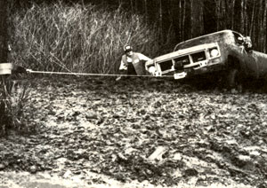
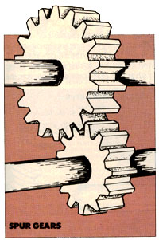
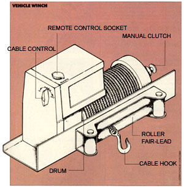
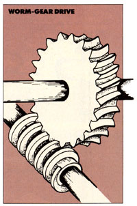
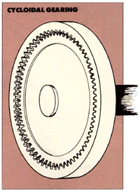
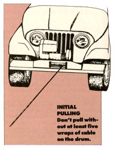
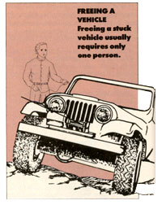
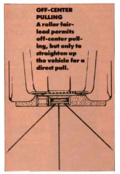
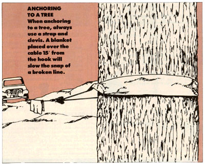
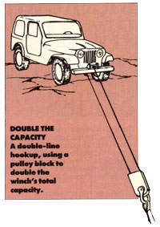

It's Pulling For You
By Richard Freudenberger
March/April 1988
Help for the rural driver's winch-hunt.
Somehow, it's always easier to get yourself into a hole than out of one. One backcountry wit, having spent most of his life waiting for the state to pave his road, passed the remainder wondering why people were so eager to get off of it. His observation regarding off=road motoring was capsulized in one sentence: "Four-wheel drive will get you into trouble, but it takes a winch to get you out."
A winch? That distinctly all-business rigging that squats on the front of pickup trucks? You bet. Because even if gathering firewood is the extent of your of roading-or even if your rural existence is limited to weekends in the woods-a winch, caref;illy tailored to your needs and to the vehicle you drive, may be the most useful country companion you can have pulling for you.
Forget the transmission-driven monsters of a generation ago. Today's electric winches are compact, convenient and unobtrusive. Some can even be hidden completely behind the original factory bumpers. But before we get into what they are, let's look at what they can do.
Most people are familiar with a tow truck winch. It's really a portable windlass built for hauling and lifting. Not so a vehicle winch, which is meant for pulling a load across a more or less horizontal surface. That's not to say that overhead lifting is beyond its ability, but most manufacturers would prefer that users leave that job to hoists, which are designed with safety features specific to overhead work.
Even so, a winch is more productive than you might imagine. Besides its obvious usehauling other vehicles or the vehicle it's attached to out of impossible situations-a winch can pull firewood up slopes and out of slippery spots, yank stubborn stumps and snags from fields or lake beds, stretch cable or fence wire tight as you please, raise gin poles or structural members at construction sites or drag heavy loads from where you don't want them to where you do.
Mounted at the rear or behind the cab of a truck, the same machine can help skid loads onto a trailer or into the bed. And, when used with pulley blocks and clevises, it can double the power of the pull or exert force at right angles to the normal direction of travel.
The fact that a 60-pound device can move 100 times its weight with ease is strong testimony to the potential of gear reduction. Virtually all winches use similar engineering principles, but apply them in different ways. Typically, an electric motor, powered by the vehicle's battery, drives a shaft connected to the winch transmission. That gear train is linked, often through a clutch, to the drum that wraps the cable.
The type of gearing arrangement used is generally matched to the winch's workload. Most traditional is the worm-gear drive: tough as nails, but demanding a lot from the motor because of friction losses in sliding gear surfaces. Paul Haugtvedt of the Oklahoma-based Ramsey Winch Company estimates the worm drive to be about 40°70 efficient-considerably less than the 70°70 efficiency of the firm's more modern rolling planetary gears. Other types being used include spur gears-an uncomplicated and reliable power transmission method-and cycloidal gearing, which is about midway in efficiency between worm drive and planetary designs.
Durability and efficiency shouldn't be thought of as absolutes, however. It's far more practical when winch-shopping to establish beforehand what kind of use the machine will see. For example, occasional log-hauling or back-road towing isn't that demanding if the winch is properly sized to the vehicle. Pulling full-size pickups out of gumbo mud as an everyday chore, on the other hand, puts a load on the equipment that it better be prepared to handle.
Making the right choice is simply a matter of paying attention to details. Probably the most important is the winch's line pull rating, measured in pounds. Unless you enjoy struggling through formulas, you can come pretty close to making a perfect match by using your vehicle's gross vehicle weight rating (GVWR) to choose the rating of your winch. Because the GVWR represents the weight of the vehicle plus its load capacity, it includes enough built-in reserve to cover unknown factors such as the suction of mud or the stress of pulling up an incline.
Of course, it's not really that simple, because there are other elements to consider. For one, make certain the rating is based on a single-line pull. Double-line hookups, in which a pulley block is used at the anchor point, reduce the winch load by halfessentially doubling its capacity. By the same token, look for a working load rating rather than a stall rating. The former is a more practical measure of the machine's pulling capacity, for the stall rating merely indicates the point at which the winch motor will stop working. If a stall figure is the only one available, make a thumbnail conversion by reducing the number by at least 15% to get an accurate representation of how much weight the winch can handle in normal use.
It's also important to realize that the cable and drum affect the capacity of a winch because they vary the tool's reduction ratio as they operate. Since the drum diameter is smaller with one layer of cable around it than with four, a winch can pull more weight with its cable fully extended. The significance of this fact becomes apparent when scanning the spec sheets. One manufacturer's 6,000-pound winch can pull 5,100 pounds with the cable on the second layer, 4,400 pounds when it's at the third layer, and only 3,900 pounds when the cable is within 25' of being fully wrapped on the drum.
To play it safe, figure on using the winch a lot in its middle range, with the cable on the third layer so 50' or 60' of it is free. On most front-mounted winches, manufacturers supply from 80' to 150' of cable, so take that into account if you'll be dealing with a specific distance.
Another thing to consider is the machine's amperage draw. It's a complicated factor, based on everything from motor type to gear efficiency. Series-wound motors have a high starting torque and a longer duty cycle than do permanent magnet motors, but draw more amperage under load. Since larger winches can test the limits of battery capacity, the current a winch uses, and how many minutes you'll be using it at one time, become important in the long run. If you expect extended pulls, you might even consider having a second battery and an isolator installed to allow you to use one power supply independently.
Think, too, about whether you want a clutch, or "freewheeling," design. It will allow you to manually pull the cable out to its full length without engaging the motorsomething to consider when you take into account typical winch line speeds of 15 or 20 feet per minute. Almost every winch operates under power in both directions (in and out) and includes a self-locking brake system. And at least one firm makes a twospeed winch to handle a variety of jobs.
One big question is that of mounting. Though a good welder could secure a winch to just about any vehicle, Ramsey's Haugtvedt gives a compelling reason why it's a good idea to stay with factory kits: "We stress-test mounting systems for all kinds of vehicles, and market the ones that work. Some applications, especially to fourwheeldrive passenger vehicles, require careful engineering because many have unit bodies, rather than channel frames like a truck. It's quite possible to damage a vehicle's subframe by installing a winch improperly."
Then too, mounting kits often include or allow for better features such as a roller (rather than a hawse) fair-lead, which guides the cable in front of the drum. The four rollers reduce friction considerably and extend the life of the cable in the process.
Finally, don't forget that certain accessories are nearly as important as the winch itself. A pulley block is useful for heavy-load situations and for pulling things at odd angles. Nylon straps are a must when anchoring to tree trunks or other points that would be damaged by a cable, and a clevis allows you to secure the winch hook to the strap safely. Heavy leather gloves are highly recommended when handling the cable to avoid serious cuts from frayed wire. And a remote winch control is essential if you anticipate much vehicle hauling on rugged or unstable terrain.
There you have it. Even if you can get by without a winch for the present, you'll know what to look for in the future. And if you do any driving in the country, that future will one day come.
|
 |
 |
 |
|
 |
 |
 |
|
 |
 |
 |
|
 |
 |
|